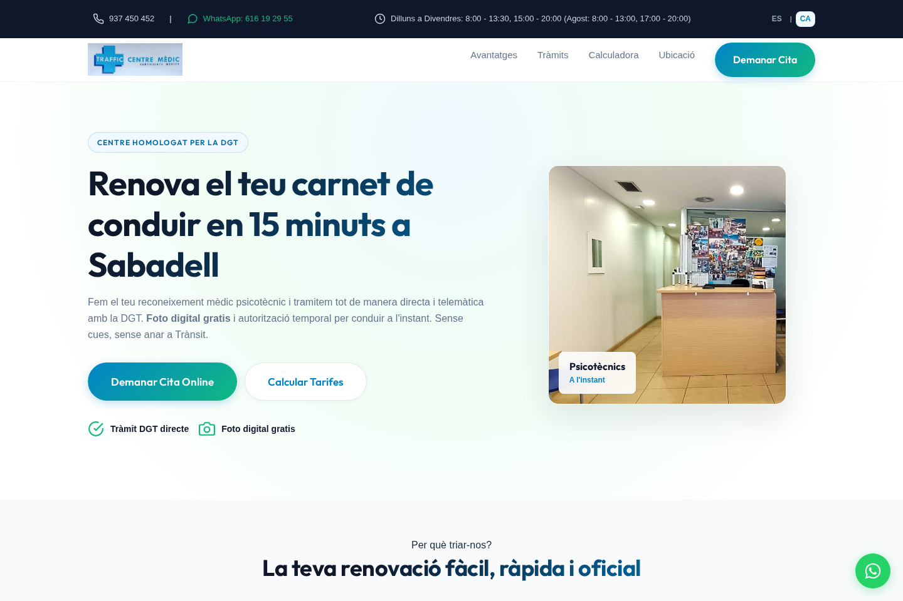
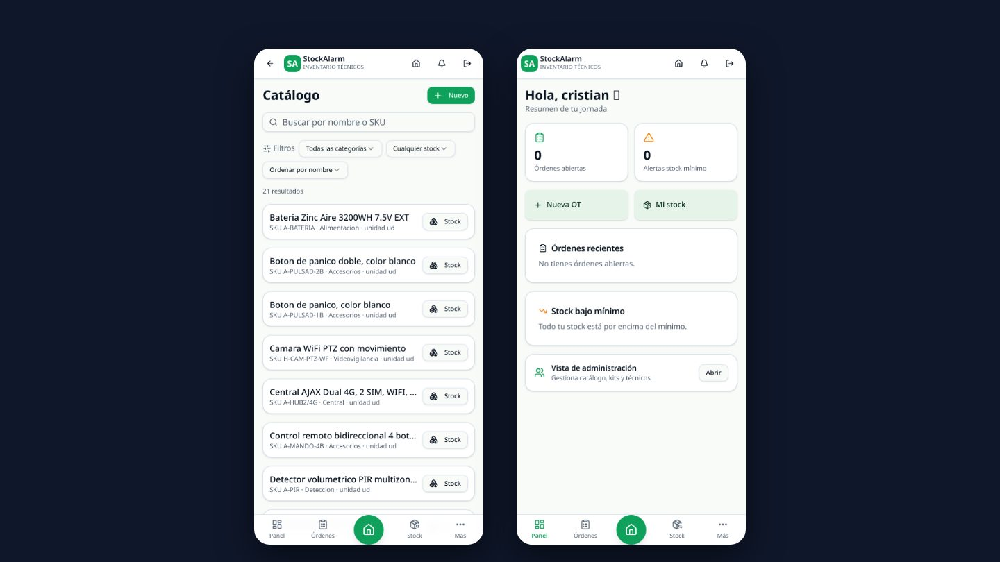
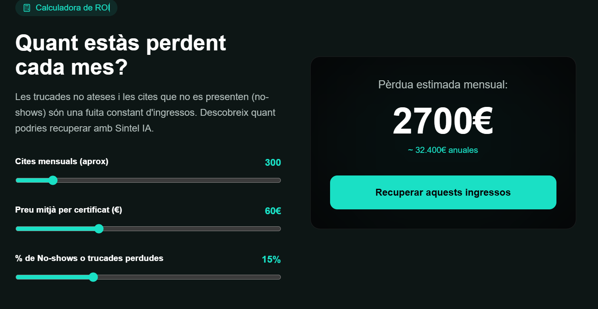
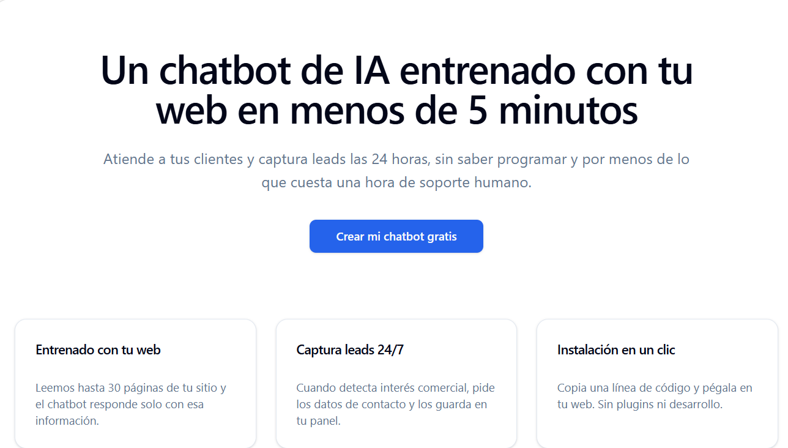
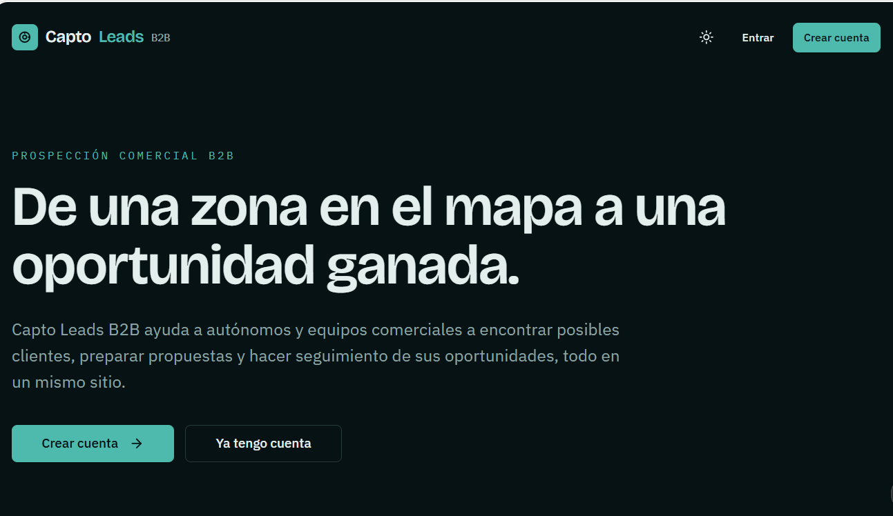
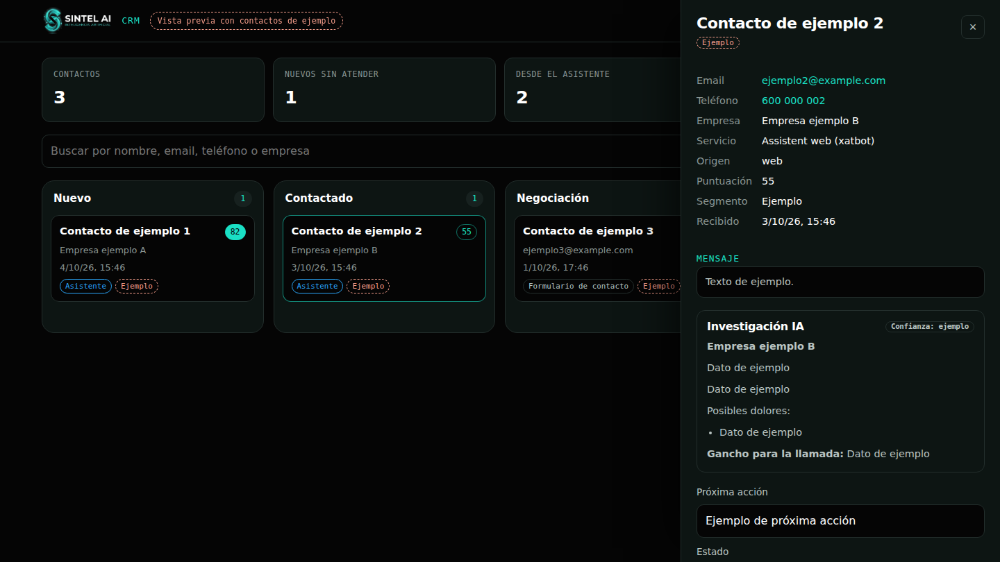

Clientes que se pierden fuera de horario
Te escriben por la tarde o el fin de semana y, cuando contestas, ya han ido a otro sitio.
Un asistente que responde y recoge sus datos al momento.
Consultoría de IA para pymes y negocios locales
Ayudamos a pymes, autónomos y negocios locales a competir al nivel de las grandes empresas: asistentes inteligentes que responden por ti, recordatorios para que nadie olvide su cita y automatizaciones que quitan trabajo repetitivo a tu equipo.
Hola, Marta. Te recordamos tu cita de mañana a las 10:30. ¿Nos confirmas que vienes?
Cuando la paciente responde, tu equipo lo ve aquí sin tener que llamar.
¿Te suena?
Te escriben por la tarde o el fin de semana y, cuando contestas, ya han ido a otro sitio.
Un asistente que responde y recoge sus datos al momento.
Los no presentados dejan huecos en la agenda y cuestan dinero cada semana.
Recordatorios automáticos para que nadie olvide su cita.
Tu equipo responde una y otra vez las mismas preguntas en lugar de atender al cliente que tiene delante.
Las dudas frecuentes resueltas sin intervención.
Presupuestos a mano, facturas que se copian de un sitio a otro y contactos repartidos en libretas y chats.
Herramientas conectadas y fichas de cliente en un solo panel.
Servicios
No vendemos tecnología abstracta ni horas de desarrollo. Resolvemos problemas concretos con herramientas que tu equipo ya conoce, como WhatsApp o el correo.
Atención al cliente 24/7, captación de contactos y reserva automática de citas, en tu web y conectado con WhatsApp.
Conectamos tu CRM, tu programa de gestión y tu correo para generar presupuestos en minutos, agilizar la facturación y eliminar tareas manuales.
Analizamos cómo trabaja tu negocio hoy y diseñamos un plan de digitalización centrado en lo que antes te devuelve la inversión.
Soluciones
Cada empresa usa herramientas distintas, así que el presupuesto final siempre es a medida y sin compromiso, después de la auditoría gratuita.
Para negocios locales y profesionales que quieren convertir visitas en contactos y resolver dudas fuera de horario.
Para pymes que necesitan responder al instante, avisar a su equipo por WhatsApp y tener todos los contactos ordenados.
Para centros médicos, estéticos, fisioterapia y negocios con cita previa que quieren web nueva y agenda automática.
| Qué incluye | Pack 1 | Pack 2 | Pack 3 |
|---|---|---|---|
| Asistente en tu web | Sí | Sí | Sí |
| No | Avisos al grupo de tu equipo | API oficial de WhatsApp Business | |
| Gestión de contactos | Email y Google Sheets | CRM centralizado | CRM centralizado |
| Agenda y recordatorios de cita | No | No | Sí |
| Landing page incluida | No, usa tu web | No, usa tu web | Sí |
| Plazo de entrega | 5 días hábiles | 10 días hábiles | 15 días hábiles |
| Voz y respuestas con IA | Complemento opcional, disponible para todos los packs | ||
Disponible para todos los packs. Tu asistente responde con inteligencia artificial usando solo la información oficial de tu negocio, y los visitantes pueden hablarle y escuchar las respuestas, en castellano y catalán.
Sectores
También trabajamos con autónomos, centros de psicotécnicos, agencias de marketing, despachos profesionales, reformas e instalaciones, concesionarios y academias.
Cómo trabajamos
En 30 minutos revisamos cómo trabajas y localizamos los cuellos de botella donde la IA te ahorra tiempo y dinero.
Desarrollamos e integramos tu solución a medida sin interrumpir el trabajo de tu equipo.
Enseñamos a tu equipo a usar las herramientas y seguimos ajustándolas con el mantenimiento mensual.
Portfolio
Proyectos en producción y demos que puedes probar.

En producciónWeb para un centro médico de Sabadell autorizado por la DGT, especializado en renovación del carnet de conducir y psicotécnicos.

En producciónAplicación instalable en el móvil para gestionar inventario, órdenes de trabajo y stock por técnico en empresas de sistemas de alarma. Pensada para usarse con una mano, en obra.

DemoSolución de automatización para centros de reconocimiento de conductores autorizados por la DGT.

DemoCrea un chatbot que atiende a tus clientes y capta contactos las 24 horas, sin saber programar.

DemoPara autónomos y equipos comerciales: encontrar posibles clientes, preparar propuestas y seguir oportunidades en un mismo sitio.

En uso en Sintel AIEl circuito completo que usamos para nuestros propios contactos y que replicamos para clínicas, inmobiliarias y pymes.
Tranquilidad
Preguntas frecuentes
En absoluto. Las pymes son las que más se benefician. La IA funciona como un empleado digital que te permite optimizar recursos y competir con los grandes sin disparar los costes de contratación.
No trabajamos con paquetes cerrados porque cada negocio es único. Empezamos siempre con una auditoría gratuita de 30 minutos y, tras ver las herramientas que ya usas, te preparamos un presupuesto a medida y sin compromiso.
Depende de la solución: el asistente web se entrega en 5 días hábiles, el Asistente Pro en 10 y la Suite Premium con landing y citas en 15.
Sí. Trabajamos exclusivamente con modelos de IA empresariales que cumplen de forma estricta el RGPD europeo. La información de tu empresa nunca se utiliza para entrenar modelos públicos.
No. Nos encargamos de toda la parte técnica. Tu equipo trabaja con herramientas que ya conoce, como WhatsApp o el correo, y le damos toda la formación necesaria.
Los asistentes tienen límites estrictos. Si detectan una pregunta fuera de su conocimiento o una situación delicada, toman los datos del cliente y pasan la conversación a tu equipo de inmediato.
Vigilancia continua de que todo funciona, hasta 2 horas al mes de ajustes (nuevas preguntas, cambios de tarifas o del flujo de conversación), la infraestructura para hasta 1.500 conversaciones al mes y soporte por WhatsApp o email con respuesta en menos de 24 horas laborables.
Auditoría IA gratuita
30 minutos, sin compromiso. Te respondemos en menos de 24 horas laborables, en castellano o en catalán.